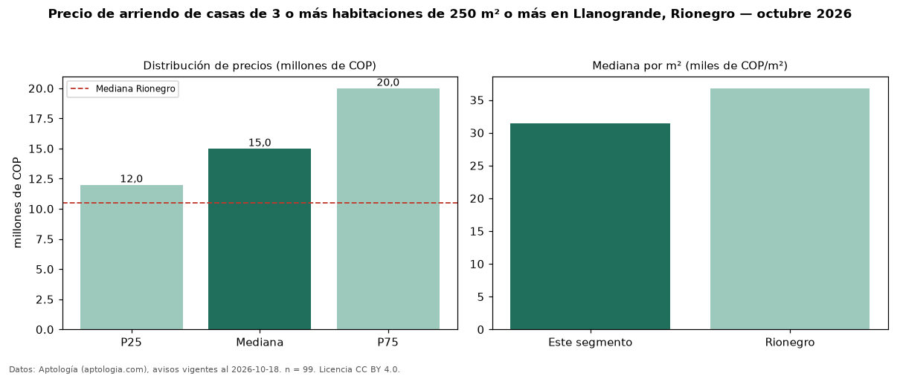

Precio de arriendo de casas de 3 o más habitaciones de 250 m² o más en Llanogrande, Rionegro — octubre 2026
Con 99 avisos vigentes, el canon mediano de casas de 3 o más habitaciones de 250 m² o más en arriendo en Llanogrande, Rionegro es COP 15 millones al mes. Frente a la mediana de las casas de 3 o más habitaciones en arriendo de Llanogrande (COP 14,55 millones, n = 138), queda 3 % por encima; este segmento reúne el 72 % de esos avisos. Por metro cuadrado, la mediana es COP 31.385/m² al mes (n = 94), 12 % por debajo de las casas de 3 o más habitaciones en arriendo de Llanogrande (COP 35.750/m²). El área mediana anunciada es 470 m². La administración mediana declarada es COP 660.000 al mes (n = 20), aparte del canon. El estrato más frecuente es 5 (47 % de los avisos con estrato). La mediana de todas las casas en arriendo de Rionegro es COP 10,50 millones (+43 % de diferencia). La mitad central de los avisos va de COP 12 millones a COP 20 millones (razón 1,7), una dispersión moderada. Datos: Aptología (aptologia.com), CC BY 4.0 — https://www.aptologia.com/casas-en-arriendo/rionegro/llanogrande. Archivos: PDF, CSV con las cifras y gráfica PNG.

| Avisos únicos | 99 |
|---|---|
| Percentil 25 | COP 12.000.000 |
| Mediana | COP 15.000.000 |
| Percentil 75 | COP 20.000.000 |
| Mediana por m² | COP 31.384 |
Fuente: avisos vigentes de portales inmobiliarios recopilados por Aptología, deduplicados (mínimo 30 avisos únicos por celda). Precios pedidos, no cerrados. Fecha: 2026-10-18.